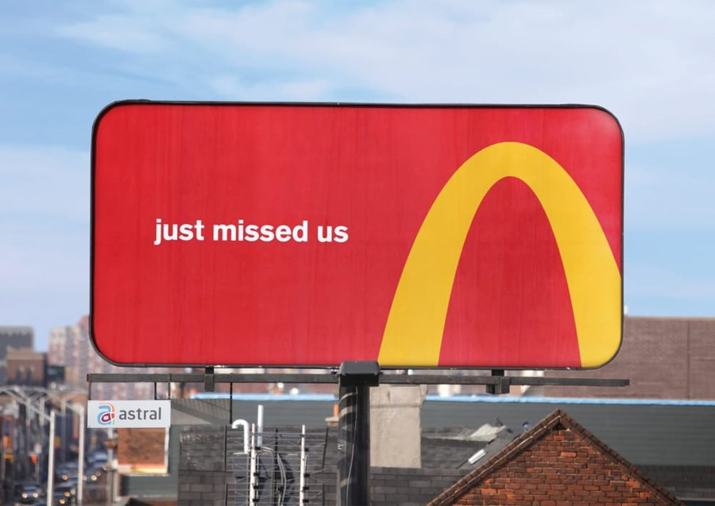

MULTIMEDIA 12 · DESIGN FOUNDATIONS · CLASSROOM ALTERNATIVE
Download the print lesson
Plan B: Community Arts Showcase
Today, design a clear, welcoming poster for a fictional community arts showcase. Choose a peaceful subject: student artwork, nature photographs, a ceramic object, plants or an abstract pattern. Use only permitted sources. A type-and-shape layout is also a valid starting point.
Work on paper or in Excalidraw; no installation or account is required. Your teacher may assign Photoshop after the planning stage. The facts below belong to a constructed practice brief, not an announced real event.
1. Notice a real example · 5 minutes

Cossette · Follow the Arches · 2018 · © rights holders. Agency source. Study reference, not an asset to copy into your own poster.
What did you notice first? Identify the visible shape, scale, colour contrast and empty space. Explain how cropping a familiar shape helps the directional message. Give evidence; different viewers can notice different features.
2. Learn three relationships · 10 minutes
Hierarchy
Rank the information: event title first, purpose second, practical details third. Size, weight and position work together.
COMMUNITY
ARTS SHOWCASEArtwork · photography · making
Practice details: Friday · 3 pm · Community hall
Contrast and alignment
Contrast is a useful visible difference. Compare light text with a dark background; test the actual pair. Alignment gives related items a shared edge. Gaps group related information.
The teaching study on the left uses a shared left edge, larger title and smaller grouped details. It is an original model, not a real advertisement or the required student answer.
Sketch a different arrangement using the same information. Keep every essential detail; change one relationship and explain its effect.
3. Choose colours with a reason · 10 minutes
This is a traditional RYB artist wheel, displayed using RGB screen colours. Digital RGB and print CMYK are different models.
Complementary: opposite positions. Analogous: neighbouring positions. Triadic: three roughly equally spaced positions.
Hue is the colour family; value is lightness; saturation is intensity. A harmony does not guarantee readability.
Choose dominant, support, accent, background and text roles. Record your HEX values or label drawn swatches. Adobe Color can help you explore.
Predict which of two colour treatments will suit your chosen audience. Test both on the same layout, then explain a choice and one limitation. Colour meanings depend on context; avoid universal claims.
4. Make type communicate · 10 minutes
Kerning changes the gap in a character pair. Tracking changes spacing across a selected range. Leading changes baseline-to-baseline distance between lines.
AV A V
Pair comparison: inspect one gap.
ARTS SHOWCASE
Range comparison: spacing throughout the words.
A welcoming event
with readable details
Choose a title role and a detail role. Test at the intended size; preserve readable spacing. This browser model illustrates relationships, not exact Photoshop metrics.
Name the control you would inspect for an awkward AV pair, an overly loose word and crowded lines. Then apply one deliberate adjustment to your layout.
5. Make your proposal and compare directions · 25 minutes
- Name the audience, viewing location and first message.
- Choose a peaceful subject and two or three visible design targets. Record sources and permitted use.
- Draw three different thumbnails: image-led, symbol-led and type-led. Change the arrangement, not just one colour.
- Choose one against the brief and explain why you rejected another.
- Write a specific goal: “By the teacher-agreed date, I will create a poster for [audience/context], using [taught controls], and check whether viewers can identify [message/details].”
- Record the next checkpoint, a technical risk and a fallback. Use paper if a browser tool is blocked.
A mood board establishes direction with credited references and reasons; thumbnails test composition; a production layout develops the chosen design. Do not confuse a collection of pictures with a justified plan.
6. Check understanding · 10 minutes
Explain one hierarchy choice, name your wheel relationship and distinguish kerning/tracking/leading. Show your selected and rejected thumbnail. Ask a peer what they read first without explaining your intent; record their actual response and one revision. Independent written review is available with teacher agreement.
Keep your proposal, alternatives and decision evidence. Your teacher will set the deadline and submission route. Planning completion alone is not an achievement grade.
70-minute suggested route; the teacher may shorten or extend it. This alternative teaches the same design relationships. Sources: Cossette, Getty, Adobe typography. Copyright remains with the respective rights holders.